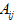
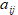
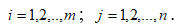

3. Обратные матрицы. Элементарные преобразования.
3. Обратные матрицы. Элементарные преобразования.
Только для квадратных, невырожденных матриц вводится понятие обратной матрицы
Определение. Матрица B называется обратной для данной квадратной матрицы A , если AB=BA=E , где E- единичная матрица. Обратную матрицу для данной матрицы A обозначают A-1, поэтому
Теорема. Для любой невырожденной матрицы существует обратная матрица и притом только одна. Для вырожденной матрицы обратная матрица не существует Пусть дана квадратная матрица
Тогда обратная матрица A-1 находится по формуле:
где - определитель матрицы A
 - алгебраическое дополнение элемента  ,

Необходимо обратить внимание, что находя алгебраические дополнения элементов строк матрицы , в обратной матрице записывают их в столбцы.
Пример. Найти обратную матрицу для матрицы A.

Проверить результат, вычислив A-A-1 .
Решение :
1) Вычислим определитель или детерминант матрицы
значит , обратная матрица существует.